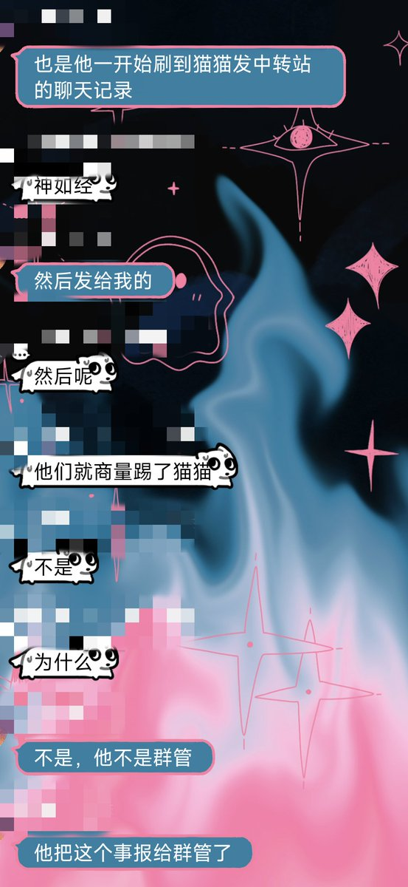
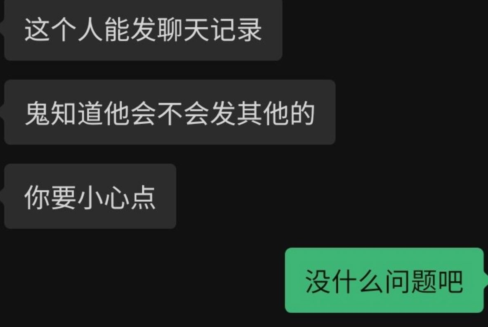

我更正我的发言，不是【兄弟盟的管理员看见】，而是某个群员(A)看见之后报告给了兄弟盟管理。但是这件事是由A告诉了我的朋友C，又由C告诉我朋友B，B告诉的我。期间没有人说要保密，所以我就很生气我就发推了。
但是由于共友只有BC，我就一直以为是C不想跟我直接起冲突所以找B帮我转达，根本不知道还有A这人的存在。
今天！突然C跟我们说A被开盒了，并且一口咬死最近的关联事件只有这一条，肯定是竹蜻蜓开的！现在A崩溃了要跳楼！
但我到现在都不知道A到底是哪个！
但我又因为A多管闲事的行为很生气决定再发一条推吐槽，但是A的朋友也就是我的共友C说，如果我导致了A紫砂，那么他也会紫砂
但我他妈还是不知道那个A是谁，只知道他确实在视奸我
评论区补配图

但是由于共友只有BC，我就一直以为是C不想跟我直接起冲突所以找B帮我转达，根本不知道还有A这人的存在。
今天！突然C跟我们说A被开盒了，并且一口咬死最近的关联事件只有这一条，肯定是竹蜻蜓开的！现在A崩溃了要跳楼！
但我到现在都不知道A到底是哪个！
但我又因为A多管闲事的行为很生气决定再发一条推吐槽，但是A的朋友也就是我的共友C说，如果我导致了A紫砂，那么他也会紫砂
但我他妈还是不知道那个A是谁，只知道他确实在视奸我
评论区补配图


我骂ftm骂的少只是因为他们在公共平台不跳，但是这帮人在群里的操作也是抽如象，原因是兄弟盟的管理员看见我在推上发别的群的聊天记录吐槽，而且我打了码的，所以兄弟盟觉得我将来有泄露他们群聊内容的风险就把我踢了😓好一个为了预防犯罪提前击毙啊…